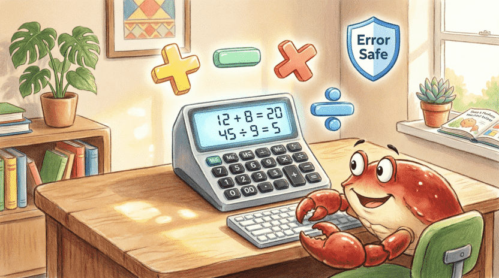
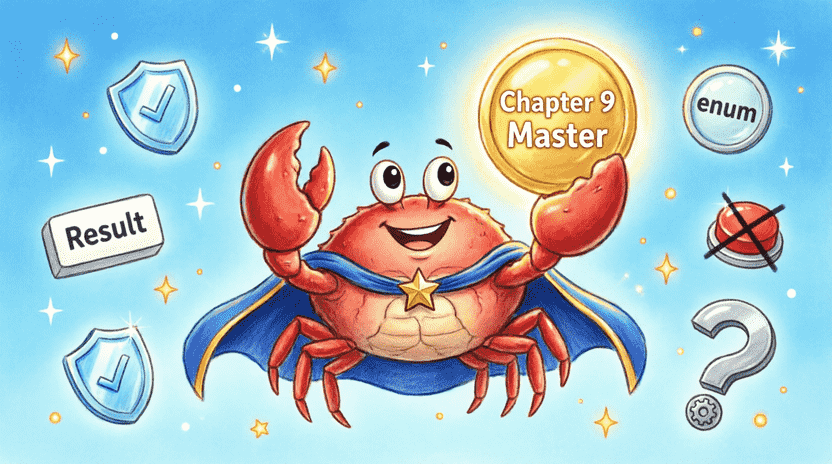

🦀 The Land of Rust: Ferris the Crab’s Space Adventures
Chapter 9: When the Spaceship Breaks! (Error Handling)
📋 Chapter Outline:
9.1. Don’t Press the Red Button! (panic!)
9.1.1. The Story: The Self-Destruct Button
Inside Ferris’s spaceship, there’s a big, shiny red button with a warning label: ⛔ DO NOT PRESS! IMMEDIATE SELF-DESTRUCT. Ferris knows that if anyone presses it, the ship explodes in an instant. No warnings, no second chances. 💥
In Rust, we have the exact same button: panic!. When panic! runs, the program immediately stops, prints an error message, and crashes. Just like the spaceship exploding!
9.1.2. panic! in Practice
Let’s intentionally press the red button:
fn main() {
panic!("The spaceship broke down! Fire everywhere! 🔥");
}If you run this, you’ll see:
thread 'main' panicked at 'The spaceship broke down! Fire everywhere! 🔥', src/main.rs:2:5
note: run with `RUST_BACKTRACE=1` environment variable to display a backtrace
The program stops completely. Any code after panic! will never run.
9.1.3. When Does panic Happen?
Besides calling panic! ourselves, some dangerous actions automatically trigger it:
🔹 Accessing a missing index in a vector: vec![1, 2, 3][99]
🔹 Using unwrap() on a None or Err value
🔹 Dividing by zero in debug mode
Example:
#![allow(unused)]
fn main() {
let v = vec![10, 20, 30];
println!("{}", v[10]); // panic: index out of bounds
}9.1.4. Tracing the Crash with RUST_BACKTRACE
When a panic happens, Rust can show you the exact path that led to the crash (like a detective’s trail!). To see it, run your program with this environment variable:
RUST_BACKTRACE=1 cargo run
You’ll get a list of functions called one after another, helping you pinpoint exactly where the problem started. 🔍
9.1.5. Exercise: Intentional Panic
Write a program with a 5-element vector. Ask the user for an index and print that element. If the index is out of bounds, let it panic. (Try running it with RUST_BACKTRACE=1 and watch the trail!)
![[Illustration: A close-up of a shiny red emergency button labeled “panic!” on a spaceship control panel, surrounded by yellow warning tape. Ferris the crab stands nearby with a shocked expression, holding his claws up to stop someone from pressing it. Style: vibrant, dramatic but child-friendly, high contrast, soft lighting.]](assets/images/9.1.png)
9.2. The Warning Lights (Result)
9.2.1. The Story: The Ship’s Warning Lights
Ferris’s ship also has yellow and amber warning lights. For example, if the engine gets too hot, a yellow light turns on with a message: ⚠️ Engine overheating. Wait 30 seconds. This is a predictable error that can be managed. Ferris can just wait for it to cool down and continue flying.
In Rust, we use Result for these manageable situations. It means: “Either everything went fine, or a predictable problem occurred that we can handle.” 🟡
9.2.2. Introducing Result<T, E>
Result is a super common enum in Rust:
#![allow(unused)]
fn main() {
enum Result<T, E> {
Ok(T), // Success! We got a value of type T
Err(E), // Oops! An error of type E happened
}
}🔹 T: The type of the successful result.
🔹 E: The type of the error.
9.2.3. Example: Opening a File
The File::open function tries to open a file. The file might not exist, or we might not have permission. So it returns a Result<File, std::io::Error>:
use std::fs::File;
fn main() {
let file_result = File::open("hello.txt");
// file_result could be Ok(File) or Err(Error)
}9.2.4. How to Handle a Result
🔸 Fast but risky: unwrap() and expect()
If you call .unwrap(), you’re saying: “If it’s an error, crash the program!” .expect(msg) does the same but with your custom message.
#![allow(unused)]
fn main() {
let file = File::open("hello.txt").expect("Couldn't open the file! 📁");
}⚠️ Warning: Only use these in quick tests or when you’re 100% sure it won’t fail!
🔸 The safe way: match
You can check both outcomes:
#![allow(unused)]
fn main() {
use std::fs::File;
use std::io::ErrorKind;
let file = match File::open("hello.txt") {
Ok(f) => f,
Err(error) => match error.kind() {
ErrorKind::NotFound => {
println!("File not found. Creating a new one. 🛠️");
File::create("hello.txt").expect("Failed to create")
}
_ => panic!("An unexpected error occurred! 😱"),
},
};
}🔸 The cleaner way: unwrap_or_else
It takes a “mini-helper function” (closure) and only runs it if there’s an error:
#![allow(unused)]
fn main() {
let file = File::open("hello.txt").unwrap_or_else(|error| {
panic!("Oops! Error occurred: {:?}", error);
});
}9.2.5. Exercise: Convert String to Number with Result
Write a function parse_number that takes a &str, tries to convert it to i32, and returns Ok(num) or Err(String) with a friendly message.
💡 Sample Answer:
fn parse_number(s: &str) -> Result<i32, String> {
s.trim()
.parse()
.map_err(|_| format!("'{}' is not a valid number 🔢", s))
}
fn main() {
let inputs = ["42 ", "hello", "-5 ", "3.14"];
for inp in inputs {
match parse_number(inp) {
Ok(n) => println!("{} -> Number: {}", inp, n),
Err(e) => println!("{} -> Error: {}", inp, e),
}
}
}
9.3. Ferris’s Rescue Tool (?)
9.3.1. The Story: The Magic Rescue Question Mark
Ferris carries a magical tool shaped like a question mark (?). Whenever a warning light turns on (a Result returns Err), he can slap the ? on it and say: “If there’s an error, immediately exit this function and pass the error up to whoever called me!” This saves us from writing long match blocks and keeps our code clean! ✨
9.3.2. Using ? in Functions that Return Result
Imagine we want a function that reads a username from a file. With ?, it looks like this:
#![allow(unused)]
fn main() {
use std::fs::File;
use std::io::{self, Read};
fn read_username() -> Result<String, io::Error> {
let mut file = File::open("username.txt")?;
let mut username = String::new();
file.read_to_string(&mut username)?;
Ok(username)
}
}If File::open fails, ? immediately returns that error. If read_to_string fails, it does the same. If everything succeeds, it returns Ok(username).
💡 Crucial Rule: The ? operator only works inside functions that return Result (or Option). If the function’s return type isn’t Result, the compiler will complain.
9.3.3. Chaining ?
You can chain multiple ? operators to make the code even shorter:
#![allow(unused)]
fn main() {
fn read_username_short() -> Result<String, io::Error> {
let mut s = String::new();
File::open("username.txt")?.read_to_string(&mut s)?;
Ok(s)
}
}9.3.4. ? with Option
The ? operator works on Option too! If the Option is None, the function immediately returns None:
#![allow(unused)]
fn main() {
fn first_char(s: &str) -> Option<char> {
s.chars().next()? // If s is empty, returns None immediately
}
}9.3.5. Translating Errors with map_err
Sometimes a function’s error type doesn’t match what we want to return. We can use map_err to translate it into a friendlier message:
#![allow(unused)]
fn main() {
use std::fs::File;
use std::io::Read;
fn read_number_from_file(filename: &str) -> Result<i32, String> {
let mut s = String::new();
File::open(filename)
.map_err(|e| format!("Failed to open {}: {}", filename, e))?
.read_to_string(&mut s)
.map_err(|e| format!("Failed to read {}: {}", filename, e))?;
s.trim().parse()
.map_err(|_| format!("No valid number found in {}", filename))
}
}map_err means: “If there’s an error, grab it, run this tiny helper function (|e| ...), and return the new error instead.”
9.3.6. Exercise: Read Two Files and Divide
Assume a.txt and b.txt each contain a number. Write a function that reads both, divides a / b, and returns f64. Handle any errors (missing file, invalid number, division by zero) with clear String messages.
💡 Sample Answer:
#![allow(unused)]
fn main() {
use std::fs::File;
use std::io::Read;
fn read_number(filename: &str) -> Result<i32, String> {
let mut s = String::new();
File::open(filename)
.map_err(|e| format!("{}: {}", filename, e))?
.read_to_string(&mut s)
.map_err(|e| format!("{}: {}", filename, e))?;
s.trim().parse().map_err(|_| format!("{}: Not a valid number", filename))
}
fn divide_files() -> Result<f64, String> {
let a = read_number("a.txt")?;
let b = read_number("b.txt")?;
if b == 0 {
return Err(String::from("Division by zero is forbidden! ⛔"));
}
Ok(a as f64 / b as f64)
}
}
9.4. Project: The Resilient Calculator
Now let’s build a real program that never crashes! A simple calculator that handles the four basic operations and manages errors like a professional. 🧮
9.4.1. Getting Expressions from the User
The user types something like 10 + 2 or 8 / 0. The program runs until they type quit.
9.4.2. The parse_expression Function
This function splits the input into: first number, operator, second number. If the format is wrong, it returns an error.
#![allow(unused)]
fn main() {
fn parse_expression(expr: &str) -> Result<(f64, char, f64), String> {
let parts: Vec<&str> = expr.split_whitespace().collect();
if parts.len() != 3 {
return Err("Format must be 'number operator number' (e.g., 5 + 3) 📝".to_string());
}
let a = parts[0].parse::<f64>()
.map_err(|_| format!("'{}' is not a valid first number 🔢", parts[0]))?;
let op = parts[1].chars().next()
.ok_or("Operator must be a single character (e.g., +) 🔣".to_string())?;
let b = parts[2].parse::<f64>()
.map_err(|_| format!("'{}' is not a valid second number 🔢", parts[2]))?;
Ok((a, op, b))
}
}9.4.3. The calculate Function
#![allow(unused)]
fn main() {
fn calculate(a: f64, op: char, b: f64) -> Result<f64, String> {
match op {
'+' => Ok(a + b),
'-' => Ok(a - b),
'*' => Ok(a * b),
'/' => {
if b == 0.0 {
Err("Division by zero is impossible! ⛔".to_string())
} else {
Ok(a / b)
}
}
_ => Err(format!("Operator '{}' is not supported. Use + - * / ⚠️", op)),
}
}
}9.4.4. The Main Loop with Error Handling
use std::io::{self, Write};
fn main() {
println!("🧮 Ferris's Resilient Calculator 🧮");
println!("Example: 10 + 5");
println!("Type 'quit' to exit.\n");
loop {
print!("> ");
io::stdout().flush().unwrap();
let mut input = String::new();
io::stdin().read_line(&mut input).unwrap();
let input = input.trim();
if input == "quit" { break; }
match parse_expression(input) {
Ok((a, op, b)) => match calculate(a, op, b) {
Ok(result) => println!("= {} ✅", result),
Err(e) => println!("❌ Error: {}", e),
},
Err(e) => println!("❌ Input error: {}", e),
}
}
println!("Goodbye! 🦀✨");
}9.5. Summary & Challenge
9.5.1. What You Learned
In this chapter, you discovered:
✅ panic!: The red self-destruct button. For unrecoverable errors.
✅ Result<T, E>: For predictable, manageable errors.
✅ unwrap() / expect(): Fast but dangerous (crashes on error).
✅ match: The safe, thorough way to handle all cases.
✅ The ? operator: A magic shortcut for early exit and error propagation (only in Result/Option functions!).
✅ map_err: Translating technical errors into friendly, readable messages.
9.5.2. Challenge: Calculator Without Spaces
Improve the project so it can handle inputs without spaces, like 10+5 or 8/2.
💡 Hint: You can iterate through the string character by character, find the first operator (+, -, *, /), split the string at that position, and parse the two numbers.
Now you know how to handle errors like a champion and write programs that guide users instead of crashing! 🛡️🦀 In the next chapter, we’ll explore Generics and Traits: tools that let us write “one-size-fits-all” code that works with any type, just like a universal space wrench! 🔧🌌
![[Illustration: Ferris wearing a superhero cape, holding a glowing “Chapter 9 Master” badge. Floating around him are safe shields, Result enums, crossed-out panic buttons, and a question mark tool. Encouraging, bright lighting, children’s book style.]](assets/images/9.5.png)